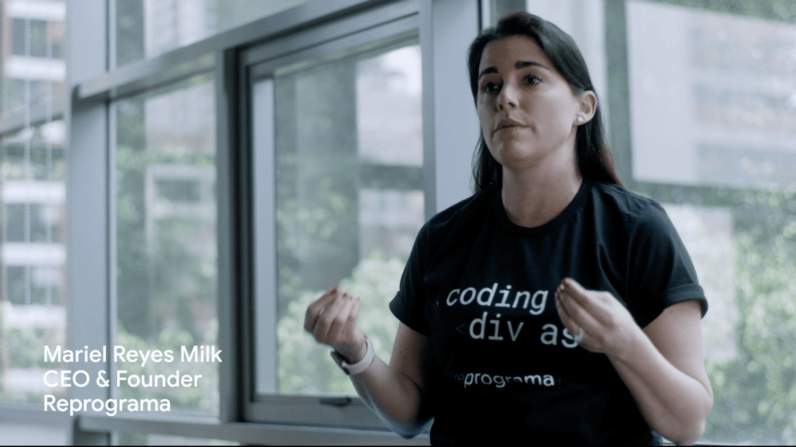

Google Global Accelerator
Making founder stories a catalyst for global visibility
Meet Jen Tacheff
Jen Tacheff founded Manifest Advisors to help ambitious people turn their next move into meaningful progress. Her work brings together growth strategy, storytelling, partnerships, and leadership.
She has worked with startups, venture funds, global companies, and mission-driven organizations—launching products, shaping brands, developing ecosystems, and supporting the people leading them.
From an early fundraising campaign to a global technology conversation, the thread is the same: connect a clear vision with the people and action that can make it real.
Let’s talkA career in
forward motion.
Google Global Accelerator: showcased scalable impact, new technologies, and founder stories; enhanced campaign effectiveness and visibility. GoFundMe / Classy: go-to-market for new data and AI products; informed product roadmap, innovation journey, and brand visibility.
Led and curated GenAI workshops and initiatives with Harvard and the University of Cambridge. Work included Leverhulme Centre for the Future of Intelligence, MIT, USC, OpenAI, DeepMind, Hugging Face, and public-sector leaders across the US, UK, and EU.
Built and co-led W Fund / Switch Coaching for Executives & Founders.
Workshops on innovation, go-to-market, startups, entrepreneurship, and impact.
Led growth and go-to-market; advised product strategies. Helped secure Onramp clients including Twitch, Amazon, Google, Coinbase, and Vanguard.
Led go-to-market and major activations at SXSW, TechCrunch, and Collision. Managed a creative studio with industry experts, creators, influencers, and investors.
Designed and launched full-funnel campaigns and partnerships with Airbnb, Salesforce, Twilio, government, and academic institutions. Led go-to-market strategies, press, positioning, and branding for frontier-market tooling.
Built operations and growth systems as a founding leadership-team member. Led board and advisory council development, strategic planning, and company revenue.
Led fundraising and marketing for a $20M+ capital campaign for a downtown Oakland center. Oversaw board and executive committees, fundraising and launch strategies, communications, events, and initiative goals.
Created and led membership programming, emerging-professionals initiatives, speaker series, and special events. Worked on $2M+ exhibitions and partnerships involving Bill Nye, Tom Hanks, Elon Musk, and the National Science Foundation.
Led active-travel tours and programs in Europe and North America.
Building the
ecosystem, too.
Member of the Board of Advisors
Sourced and reviewed hundreds of startups across AI / ML, voice, robotics, enterprise and smart data, entertainment, media, extended reality, Web3, and the future of work.
Lead Mentor (Top 1% of Ecosystem)
Named a 2023 Techstars All-Star Mentor, announced February 19, 2024.
Board member / strategic adviser
Fundraising, marketing, pitch decks, and leadership succession, grounded in Tina Lee’s supplied testimonial and Women 2.0 / Mothers in Science bios.
Recognition & education
2023 Techstars All-Star Mentor · Women Transforming Technology Executive Leadership recognition, 2018 · University of California, San Diego, B.A.